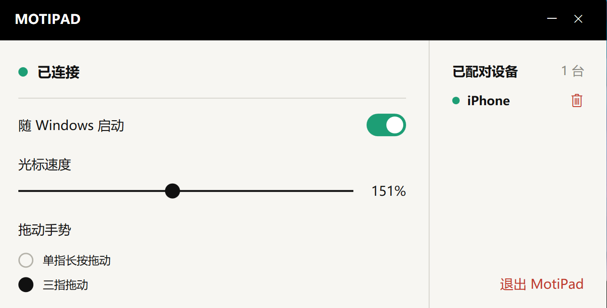

少占空间
鼠标没地方走，
手指还能动。
不用为鼠标留一块来回移动的桌面。手指在手机屏幕上滑动，就能控制电脑光标。
少占一点空间，少带一件配件。
熟悉的手势，就在你的手机上。


咖啡店的小桌、临时工作的角落，或是不想再多带一件配件的日子。用手边的 iPhone，把触控板一起带上。
不用为鼠标留一块来回移动的桌面。手指在手机屏幕上滑动，就能控制电脑光标。
出门不想多带鼠标或触控板？让平常带着的 iPhone，多做一件事。
移动光标、轻点、双指滚动。
简单的操作区，让手指专注在操作本身。
文件要拖到大屏幕的另一端，手指却已滑到手机边缘？短暂抬起，再放回来，就能接着拖曳。
把常用的电脑配对好，从手机上的菜单选择要控制的那一台。换个工作位置，也能接着用。
把常用电脑加入配对列表。
在菜单中切换控制对象。
每次控制一台电脑。
打开 MotiPad，以手机屏幕操作光标、滚动与拖曳。
安装接收端，在同一个局域网完成配对。光标速度与拖曳手势，都能在电脑端调整。
下载并安装 Windows 接收端，搭配 iPhone 上的 MotiPad 使用。iPhone 版 App Store 链接将于上架后提供。